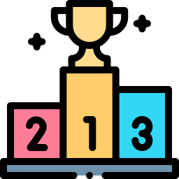

What is Livrux?

Livrux is a family reading tracker that turns books into rewards. Kids earn virtual coins — called Livrux — every time they finish a book, based on how many pages it has. Parents set the reward formula and decide what those coins are worth in the real world.
The goal is simple: make reading fun, visible, and worth celebrating.
Getting started
- Create a free account with your email or via Google / Apple Sign-In.
- Add a reader profile for each child — name, avatar, and an optional PIN.The PIN protects the reader's settings from curious little fingers.
- Set your reward formula in Settings → Reward Formula.You can always change it later — it only affects future completions.
- Start adding books and let the reading begin!
Adding books

There are three ways to add a book to a reader's library:
- Search — type the title or author and pick from Google Books results.
- Scan — use the camera to scan the ISBN barcode on the back cover.
- Manual entry — type the details yourself if the book isn't in the database.
When adding a book you choose its status:
- Currently reading — the book appears in progress; no coins yet.
- Completed — coins are awarded immediately based on the page count and your formula.
💡 You can see a live coin preview as you enter the page count — so you know exactly what the reward will be before saving.
After completing a book, the child can give it a rating ( 😕 disliked · 😊 liked · 😍 loved) and write a short review.
Rewards
The reward formula calculates how many Livrux coins a completed book is worth. You can configure it in Settings → Reward Formula.
- Base reward — a fixed amount for every completed book.
- Per-page rate — extra coins for each page read.
- Minimum pages bonus — an extra bonus if the book is at least N pages long.
- Foreign language bonus — extra coins when the book is read in a language other than the reader's native tongue.
The Wallet tab shows the full transaction history — every book completed and every reward spent.
When the child wants to redeem coins for a real-world treat, you record the spend in the Wallet. Coins have no monetary value and exist only within the app.
XP, Streaks & Badges

XP (experience points) are earned alongside coins for every completed book. XP determines the reader's position in the global ranking and cannot be spent — it's a measure of reading accomplishment.
Reading streaks track how many days in a row a reader completes a book. The current streak and all-time record are shown on the reader's profile.
Badges are achievements unlocked automatically when certain milestones are reached:
💡 Badges are automatically revoked if the qualifying books are deleted, keeping the profile honest.
Friends & Ranking

Readers can connect with friends to share progress and compete on the global XP leaderboard.
- Each reader has a unique 6-character friend code — share it with friends.
- Enter a friend's code in the Friends tab to send a request.
- The other reader accepts (or rejects) the request.
- Once connected, you can see each other's books, badges, and XP rank.
Parents can control whether their child can manage friendships independently or requires parental approval — this is configurable in Settings → Parental Controls.
Co-guardians
Co-guardians are additional adults — a partner, grandparent, or co-parent — who can view and manage the same readers on their own device, without sharing your login.
- Go to Settings → Co-guardians.
- Tap Invite and enter the other person's email address.
- They receive an invitation link and create (or log into) their own Livrux account.
- Once accepted, they have the same access to your reader profiles.
You can remove a co-guardian at any time from the same settings screen.
Multiple readers

One Livrux account can hold as many reader profiles as you need — one per child (or even one for yourself).
- The home screen shows all your readers as a grid of avatars.
- Tap a reader to enter their space; each reader has their own books, wallet, streaks, and badges.
- Each reader can have an individual PIN and a different visual theme.
- The parental account PIN locks access to sensitive settings across all readers.
Settings & privacy
- Language — English, Portuguese, and German; auto-detected from your device and switchable at any time.
- Theme — each reader has a personal colour theme (Classic, Night, Indigo, Ruby).
- Parental controls — set a PIN to protect account settings and configure per-reader PINs.
- Data & privacy — Livrux is GDPR / LGPD compliant. You can delete your account and all associated data at any time via Settings → Delete account.
Questions? Reach us at livrux@fecastro.com.